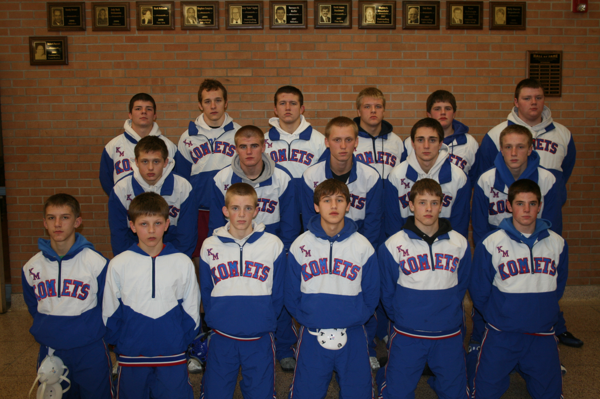

Season
2010-11
29-4Dual record
14Wrestlers
Jon Buchanan & Jamie HeidtHead coach
3rd Place State Team

Roster
| Wt | Wrestler | Grade | Record | State |
|---|---|---|---|---|
| Dec. | 7th Hayfield @ LC | W | 51-6 | |
| Dec. | 7th Lake City | W | 45-22 | |
| Dec. | 14th Maple River | W | 58-5 | |
| Dec. | 14th St. Peter | W | 67-3 | |
| Dec. | 16th Goodhue | W | 68-6 | |
| Dec. | 23rd LaCrescent | W | 73-0 | |
| Jan. | 6th Kenyon-Wanamingo | W | 49-12 | |
| Jan. | 7th Mason City (Ia.) | W | 36-32 | |
| Jan. | 7th Montini Catholic (III) | L | 33-24 | |
| Jan. | 7th Wisconsin Rapids (Wi.) | L | 38-26 | |
| Jan. | 8th Hasting | W | 31-24 | |
| Jan. | 8th Roseburg (Or.) | W | 32-27 | |
| Jan. | 8th Grand Island (NE.) | W | 29-25 | |
| Jan. | 13th Cannon Falls | W | 63-12 | |
| Jan. | 13th Stewartville | W | 39-26 | |
| Jan. | 15th Emmetsburg (Ia.) | W | 60-11 | |
| Jan. | 15th Osage (Ia.) | W | 46-21 | |
| Jan. | 15th Independence (Ia.) | W | 52-27 | |
| Jan. | 15th Clear Lake (Ia.) | W | 50-15 | |
| Jan. | 20th Zumbrota-Mazeppa | W | 39-21 | |
| Jan. | 27th Byron @ Pine Island | W | 46-19 | |
| Jan. | 27th Pine Island | W | 65-4 | |
| Jan. | 29th Lewiston-Altura/Rushford-Peterson | W | 52-15 | |
| Jan. | 29th Waseca | W | 49-16 | |
| Jan. | 29th Jackson County Central | W | 37-32 | |
| Jan. | 29th Simley | L | 41-21 | |
| Feb. | 10th Triton | W | 68-0 | |
| Feb. | 17th Cannon Falls | W | 63-9 | |
| Feb. | 19th Plainview-Elgin-Millville | W | 58-9 | |
| Feb. | 19th Caledonia | W | 45-16 | |
| Mar. | 3rd Wabasso/Red Rock Central | W | 31-20 | |
| Mar. | 3rd Scott West | L | 36-19 | |
| Mar. | 3rd Foley | W | 40-18 | |
| 103# | Ryan Erdmann | 10th | 30-10 | Section 3rd |
| 112# | Nate Thomas | 10th | 25-3 | 2nd at state |
| 119# | Tony Morrow | 12th | 39-7 | 2nd at state |
| 125# | Branden Schorr | 10th | 31-12 | Section 1st |
| 130# | Coltan Laganiere | 10th | 26-14 | Section 2nd |
| 135# | Garret Garness | 12th | 45-3 | 3rd at state |
| 140# | Dakota Hanson | 12th | 27-12 | Section 3rd |
| 145# | Ethan Damon | 12th | 15-16 | Section 4th |
| 152# | Corben Hansen | 10th | 30-14 | Section 2nd |
| 160# | Zach Schreiber | 12th | 20-8 | Section 3rd |
| 171# | Darrin Allen | 11th | 30-12 | Section 3rd |
| 189# | Broc Berge State champ | 10th | 37-1 | 1st at state |
| 215# | Harrison Barnes | 10th | 7-20 | |
| 285# | Sam Stoll | 9th | 39-6 | 2nd at state |
Team Results
29-4 · Click to expand
- Dec. 7thHayfield @ LCW51-6
- Dec. 7thLake CityW45-22
- Dec. 14thMaple RiverW58-5
- Dec. 14thSt. PeterW67-3
- Dec. 16thGoodhueW68-6
- Dec. 23rdLaCrescentW73-0
- Jan. 6thKenyon-WanamingoW49-12
- Jan. 7thMason City (Ia.)W36-32
- Jan. 7thMontini Catholic (III)L33-24
- Jan. 7thWisconsin Rapids (Wi.)L38-26
- Jan. 8thHastingW31-24
- Jan. 8thRoseburg (Or.)W32-27
- Jan. 8thGrand Island (NE.)W29-25
- Jan. 13thCannon FallsW63-12
- Jan. 13thStewartvilleW39-26
- Jan. 15thEmmetsburg (Ia.)W60-11
- Jan. 15thOsage (Ia.)W46-21
- Jan. 15thIndependence (Ia.)W52-27
- Jan. 15thClear Lake (Ia.)W50-15
- Jan. 20thZumbrota-MazeppaW39-21
- Jan. 27thByron @ Pine IslandW46-19
- Jan. 27thPine IslandW65-4
- Jan. 29thLewiston-Altura/Rushford-PetersonW52-15
- Jan. 29thWasecaW49-16
- Jan. 29thJackson County CentralW37-32
- Jan. 29thSimleyL41-21
- Feb. 10thTritonW68-0
- Feb. 17thCannon FallsW63-9
- Feb. 19thPlainview-Elgin-MillvilleW58-9
- Feb. 19thCaledoniaW45-16
- Mar. 3rdWabasso/Red Rock CentralW31-20
- Mar. 3rdScott WestL36-19
- Mar. 3rdFoleyW40-18
Head coachJon Buchanan & Jamie Heidt
AssistantKevin Berge
AssistantRyan Hill
AssistantFrank Marchant
AssistantJeff Patzke
From the archive
Photos
Got pictures from 2010-11?
Team photos, tournament shots, newspaper clippings. Send them in and they go on this page.
Send us photos